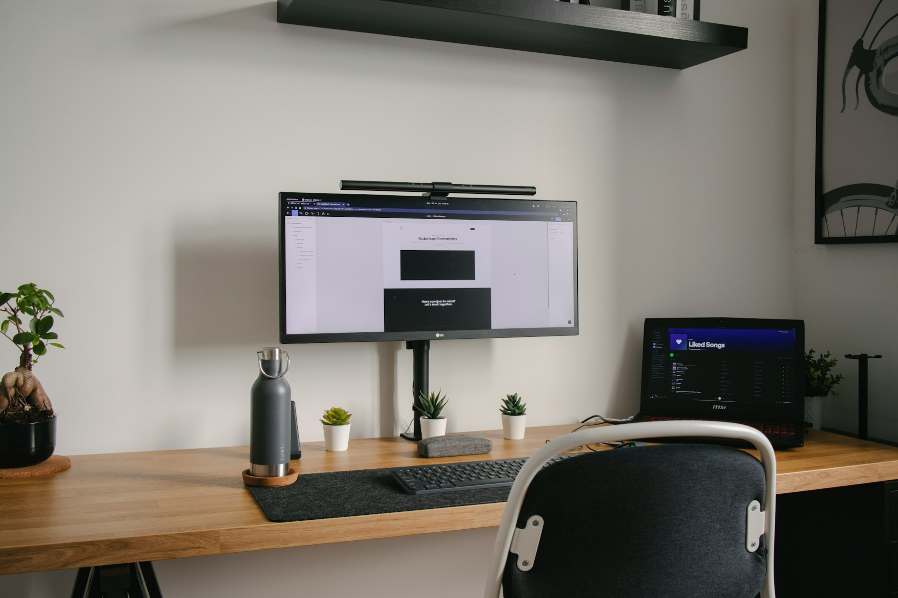

TL;DR
Balancing a side hustle with a full-time job requires intentional planning. Start with 5-10 hours weekly, employing time-blocking techniques, and be mindful of burnout risks. A structured approach enhances success while maintaining work-life balance.
Who Can Really Juggle a Side Hustle?

Juggling a side hustle with a full-time job requires intentional planning and time management. Many individuals, from busy professionals to stay-at-home parents, often mistakenly believe that they can seamlessly integrate extra work into their already demanding lives.
However, the truth is that side hustles demand significant effort and dedication. For instance, if you're working a 40-hour week and want to commit an extra 10 hours to a side project, you may have to sacrifice personal time, manage family obligations, and find ways to stay motivated beyond your primary job.
This is not an endeavor for everyone; it’s crucial to assess your current commitments before diving in.
Why Common Advice Fails
Most advice around side hustles highlights enthusiasm but neglects to address the common barriers that can derail your efforts. For instance, many proponents recommend simply 'making time' without acknowledging the hidden time drains, such as procrastination and poor scheduling.
A typical scenario may involve planning to work on your side hustle during the weekend but finding yourself overwhelmed with household chores instead.
Another frequent pitfall is the tendency to underestimate the time required for initial setup and ongoing tasks. When starting an online store, for example, the reality of managing inventory, marketing, and customer service can result in far more time investment than expected, leading to burnout and missed opportunities.
Crafting Your Side Hustle Workflow
Constructing an effective workflow is key to managing both a full-time job and a side hustle. Time blocking is an efficient method that involves allocating specific time slots in your calendar for side hustle tasks.
For instance, if you work from 9 AM to 5 PM, consider blocking out 7 PM to 9 PM on weekdays specifically for side hustle activities. This creates a structured approach and enables you to focus entirely on that project during the specified times.
Here’s a simple structure to get you started: 1. Identify Tasks: List all your side hustle responsibilities. 2. Prioritize: Rank tasks based on urgency and importance. 3. Time Block: Allocate dedicated blocks in your weekly planner for each priority task. 4. Review: Take time at the end of each week to adjust your schedule based on accomplishments and challenges.
By following this systematic approach, you can effectively manage both your job and your burgeoning side business alongside.
A Real Example: Maria's 30-Day Side Hustle Journey
Maria, a marketing professional, successfully launched her online tutoring service in just 30 days while working full-time. Here’s how she structured her journey:
Week 1: Research and Planning (10 hours) In her first week, Maria identified her target market and outlined a business plan. She collected data and found that online tutoring could generate an average of $25 per hour.
Week 2: Building Infrastructure (15 hours) Maria spent her second week creating a website using Wix and developing promotional content. She dedicated an additional five hours to setting up a social media presence.
Week 3: Building Clientele (10 hours) During the third week, Maria used her existing network to drum up business and set up an email marketing campaign, landing her first few clients.
Week 4: First Income and Feedback (10 hours) On the final week, Maria began tutoring sessions, generating her first income, equating to $200 that month.
Each week, she faced challenges such as time management and client scheduling but adjusted her time blocks as needed.
Maria's disciplined approach allowed her to balance her responsibilities effectively.
Common Mistakes and Consequences
There are several pitfalls that individuals often encounter when trying to balance a side hustle with full-time work. A prevalent mistake is taking on too much too soon, which can lead to burnout.
For example, after a successful launch, some may feel compelled to ramp up workload, underestimating their capacity to sustain this pace. Another trade-off involves neglecting the full-time job for the side hustle, which can jeopardize job security.
Consider Sarah, who became so engrossed in her online shop that she missed critical deadlines at work—ultimately leading to a performance review.
The consequence of such mistakes can be severe, resulting in inadequate income from the side hustle and compromising one's primary job. Regularly assessing workload and maintaining clear boundaries between jobs is essential to avoid such downfalls.
Next Steps: Scaling Your Side Hustle
Once you've found a rhythm with your side hustle, it’s time to think about scaling. Consider refining your offerings or diving deeper into your niche.
For instance, if you're tutoring, think about creating online courses to generate passive income. Additionally, seek tools to enhance productivity, such as Trello for project management or Canva for design.
Aim to track your progress weekly and celebrate small wins; this motivation can keep the momentum going. Another decision point involves determining when to invest in resources that can free up your time, such as outsourcing specific tasks.
This will allow you to focus on growth while maintaining a steady pace in your full-time job. Balancing this growth while avoiding overwhelming work is key moving forward.
FAQ
How much time should I allocate to my side hustle each week?
It's recommended to start small, around 5-10 hours weekly, and then adjust based on your capacity and productivity.
What are the best side hustles to start while working full-time?
Options vary based on skills. Online tutoring, freelance writing, and print-on-demand services are popular choices.
How do I prevent burnout while managing both a side hustle and a full-time job?
Implement strict boundaries between work and hustle, practice self-care, and consistently evaluate your workload.
This article has been reviewed for practical usefulness and is updated when information changes.
Next step
Use the article as a decision point, not just reading material. Your next system matters more than more browsing.
Search more articles
Find related tools, workflows, and guides.
Photo credits
- Photo 1: Nubelson Fernandes via Unsplash
- Photo 2: Nikolay via Unsplash
- Photo 3: EFFYDESK via Unsplash
- Photo 4: Kim Tayona via Unsplash
- Photo 5: Maxime via Unsplash